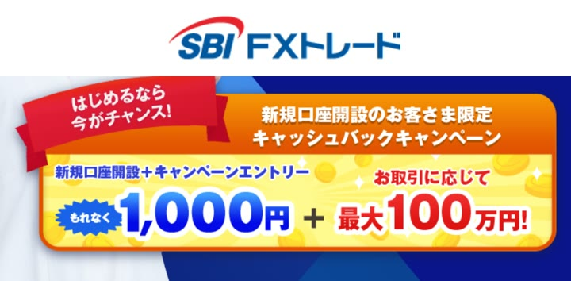

当サイトイチ押し！

1SBI FXトレード
新規口座開設で1,000円キャッシュバック
1通貨単位で取引できる数少ないFX会社。少額から始めたい初心者におすすめ。
まずは少額取引で試したいなら！
SBI FXトレードで無料口座開設する口座開設・維持手数料は無料
- 新規口座開設＋エントリーで1,000円キャッシュバック（取引・入金不要）
- 1通貨（約6円の証拠金）から取引可能
- 最短5分で申込み完了。最短即日で取引開始
※キャッシュバックの受け取りにはエントリーが必要です（9/30まで）
※2020〜2026年 オリコン顧客満足度®調査 FX 初心者 第1位（SBI FXトレード公式サイトより）